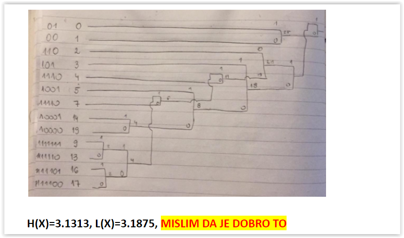

kivu Za 17. je točno i ono na docsu, ali kolega @knjklj je to jednostavno objasnio u svom postupku ovdje.
Btw, u tom postupku za 17. zadatak nema izračunatog stupnja kompresije. Vidim da je na docsu samo spomenuto da je to 128/36 = 3.556, ali nije objašnjeno zašto je to tako. Zna li netko?
Bobicki stupanj kompresije= nekomprimirana velicina/komrpimirana velicina pocetni niz imao je 16 brojeva*8 bita / (pobrojis sve nule i jedinice koje si dobio u novom kodu)
Reducirao sam prezentacije tako da sadrže ono što je bitno (bar po meni). Konačan broj stranica je 292, tj. 73 stranice za 4-po-stranici PDF-u (dakle da se isprintati na 37 listova).
Možete ih pregledati/preuzeti ovdje
Kako se ovdje računa H i L?

Stark http://denis-sofic.from.hr/huffmanov-kod
Stark H je entropija imas formulu na prez, L je suma(vjerojatnost simbola*duljina koda tog simbola)
Stark Zasto se radi ovaj zadatak? nije li da on ide u ZI?Zavrsni ispit 2015/16 je identican ovome
Kiflica Postupak je s TINF-a, a imaš i u prezama, tak da nema neki preveliki razlog zašto ne bi bio u MI
Kad radimo logaritamski i racunamo npr MAD 2 puta za isti blok tokom razlicitih koraka kako to gledamo?
Racunamo li ga stvarno 2 put ili samo jednom? Odnosno kako se to gleda kad gledamo ukupni broj zbrajanja?
Jel zna netko što je bitno iz 2. ciklusa? Gledam ova predavanja i ne shvaćam kako je moguće snimiti nešto ovoliko monotono i redundantno…
M̵̧̩͑̀͝î̶͍̉ć̴̝̾́̀o̶̺̟̣͂̽ Hoće Mlinarić tako kad je u elementu
Koliki ste korak uzimali?
gama i sto ste za ubrzanja stavili?
gama Ja sam uzeo 2 jer s 4 nisam dobivao nis od ponudenog
gama Ja sam dobio ubrzanja 4.5 i 9
Bananaking 16, 3SS, ORT , neka me netko ispravi ako sam u krivu.
Jel jos nekom sumnjivo puno "nista od ponudjenog odgovora?
konkretno pomak za LOG i ubrzanje za ORT?
adrian7000 Meni je bio samo onaj s RGB u YUV takav jer su mislili YCbCr (provjerio sam)
Doduše prvih 6 nisam riješio uopće
metoda kvantizacije u tri zadatka je bila \lfloor q \rfloor, ali nema razlike u rješenjima osim za onaj rekonstruirani niz
Koji je onda korak bio na kraju 3 ili 4 i koja su rjesenja u tim zadacima?
Frootek meni je 17 ispalo
Zabe nije ti optimalno stablo onda, što možeš provjeriti i ovdje
Zaokruživanjem umjesto floora stablo je isto, samo 2 i 3 zamijene mjesta.